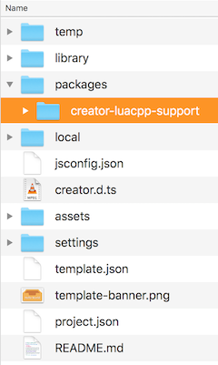
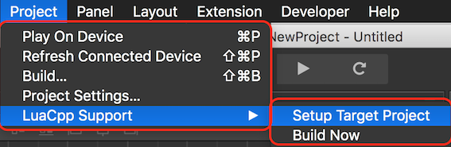
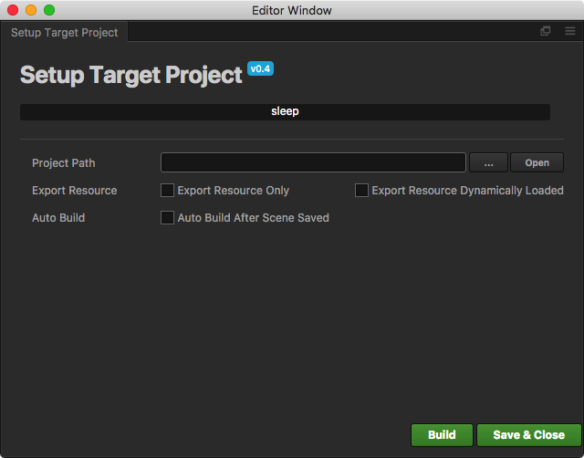

creator_to_cocos2dx 插件
Cocos Creator 可以很高效的编辑场景和 UI，同时内置支持 JavaScript，这对 JavaScript 开发者十分友好。可是对于 C++/Lua 开发者，无法直接利用 Creator 高效的界面编辑功能，可能有一些遗憾。
为了去除这种遗憾，我们提供了 creator_to_cocos2dx 插件，它允许开发者导出 Creator 编辑的场景到 Cocos2d-x 的 C++/Lua 工程中。插件逻辑上分为两部分，第一部分是 Creator 的插件，负责把 Creator 制作的场景导出为 .ccreator 文件；第二部分是 reader，负责在 C++/Lua 工程中解析导出的 .ccreator 文件。
特性
使用插件要求 Cocos2d-x 版本 v3.14+，Creator 版本 v1.4+。
Creator 使用基于组件的模型创建对象，而 Cocos2d-x 每个对象有自己的结构，因此插件很难支持全部的 Creator 特性。下面是目前支持的一些特性：
| Node | Node | Node | Node | Node |
|---|---|---|---|---|
| Scene | Sprite | Canvas | ScrollView | Label |
| EditBox | ParticleSystem | TiledMap | Button | ProgressBar |
| RichText | SpineSkeleton | Widget | Animations | VideoPlayer |
| WebView | Slider | Toggle | ToggleGroup | PageView |
| Mask | Collider | Prefab | DragonBones |
如果在使用过程中，发现某些特性不支持，升级 Cocos2d-x 和 Creator 可能是一个解决办法。
安装配置
在 Cocos Creator 中添加 creator_to_cocos2dx 插件：
- 克隆 GitHub 仓库 Creator To Cocos2d-x.
将插件仓库目录 creator_project/packages/creator_luacpp_support 拷贝到 Creator 项目的 packages 目录

使用 Creator 打开刚才添加插件的项目，在菜单栏的项目(Project)下，即可看到
LuaCpp Support菜单项。
Creator 场景导出
使用插件进行场景导出：
在菜单栏中点击 项目(Project) -> LuaCPP Support -> Setup Target Project，出现的对话框中 Project Path 选择目标 Cocos2d-x 工程的路径。

点击 Build，构建过程将很快完成
在你编译运行 Cocos2d-x 项目前，记得重新 Build。完成 Build 后，导出的 reader 源码和 Creator 资源将位于如下位置：
C++ 项目：
源码： NATIVE_PROJECT_ROOT/Classes/reader
资源： NATIVE_PROJECT_ROOT/Resources/creator
LUA 项目：
源码：NATIVE_PROJECT_ROOT/frameworks/runtime-src/Classes/reader
资源：NATIVE_PROJECT_ROOT/frameworks/runtime-src/Resources/Creator
NATIVE_PROJECT_ROOT 是 Build 时，选择的 Project Path 路径
导出选项
Export Resource Only, 不导出插件包含的 reader 源码，只导出 Creator 的场景和相关的资源，通过这种方式，可以避免二次导出的时候插件附带的原始 reader 覆盖掉已经导出到项目中的 reader。
Export Resource Dynamically Loaded, 导出可能被动态加载的资源，根据 Creator 的资源使用规范，动态加载的资源需要放置到 resources 目录下。默认的导出选项，只导出在 Creator 场景中被静态引用的资源文件。
Auto Build After Scene Saved,在 Creator 场景保存后，后台运行插件，按照面板的配置进行导出。通过这种方式简化开发者使用插件进行导出的流程。
场景导入 Cocos2d-x 项目
完成上一步的场景导出后，reader 源码和 Creator 资源都被放到文件系统中了。此时你需要将这些东西，添加到工程中。
增加头文件搜索路径
将这些目录，添加到工程的头文件搜索路径中：
对于 C++ 项目：
```sh
reader
```
对于 Lua 项目：
```sh
reader
reader/collider
reader/animation
reader/dragonbones/cocos2dx
reader/dragonbones/armature
reader/dragonbones/animation
reader/dragonbones/events
reader/dragonbones/factories
reader/dragonbones/core
reader/dragonbones/geom
```
Android 平台的特殊处理
Android 平台的头文件搜索路径添加方式有一些特殊，需要修改 Android.mk 文件。仿照下面的示例，添加文件包含：
对于 C++ 项目：
```sh
LOCAL_STATIC_LIBRARIES += creator_reader
# _COCOS_LIB_ANDROID_BEGIN
# _COCOS_LIB_ANDROID_END
$(call import-module, ./../../Classes/reader) # import module path
```
对于 Lua 项目：
```sh
# for lua
include $(CLEAR_VARS)
LOCAL_MODULE := creator_reader_lua
LOCAL_MODULE_FILENAME := libcreatorreaderlua
LOCAL_ARM_MODE := arm
LOCAL_SRC_FILES := $(cpp_src) \
lua-bindings/creator_reader_bindings.cpp \
lua-bindings/reader/lua_creator_reader_auto.cpp \
lua-bindings/reader/lua_creator_reader_manual.cpp \
lua-bindings/dragonbones/lua_dragonbones_manual.cpp \
lua-bindings/dragonbones/lua_dragonbones_auto.cpp
LOCAL_STATIC_LIBRARIES += creator_reader_lua
# _COCOS_LIB_ANDROID_BEGIN
# _COCOS_LIB_ANDROID_END
$(call import-module, ./../../Classes/reader)
```
导入场景的使用
上面的工作完成了，你就可以添加代码开始使用 Creator 中的场景了，使用方式非常的简单：
对于 C++ 项目，只需要一步：
// mygame.cpp
#include "reader/CreatorReader.h"
void some_function()
{
creator::CreatorReader* reader = creator::CreatorReader::createWithFilename("creator/CreatorSprites.ccreator");
// will create the needed spritesheets + design resolution
reader->setup();
// get the scene graph
Scene* scene = reader->getSceneGraph();
// ...and use it
Director::getInstance()->replaceScene(scene);
}
对于 Lua 项目，需要两步：
注册 reader 绑定：
#include "reader/lua-bindings/creator_reader_bindings.hpp" ... register_creator_reader_manual(L);添加代码使用导出的场景：
local creatorReader = creator.CreatorReader:createWithFilename('creator/CreatorSprites.ccreator') creatorReader:setup() local scene = creatorReader:getSceneGraph() cc.Director:getInstance():replaceScene(scene)
如何使用 ColliderManager
我们提供了 ColliderManager 对象用于管理碰撞，每个场景都有一个 ColliderManager 的实例，你可以使用使用这个实例，监听碰撞事件：
creator::CreatorReader* reader = creator::CreatorReader::createWithFilename("creator/CreatorSprites.ccreator");
// will create the needed spritesheets + design resolution
reader->setup();
// get the scene graph
Scene* scene = reader->getSceneGraph();
auto colliderManager = scene->getColliderManager();
colliderManager->registerCollitionCallback([=](creator::Contract::CollisionType type, creator::Collider* collider1, creator::Collider* collider2) {
if (type == creator::Contract::CollisionType::ENTER)
colliderManager->enableDebugDraw(true);
if (type == creator::Contract::CollisionType::EXIT)
colliderManager->enableDebugDraw(false);
}, "");
了解更多的 ColliderManager 特性，请查看 ColliderManager.h